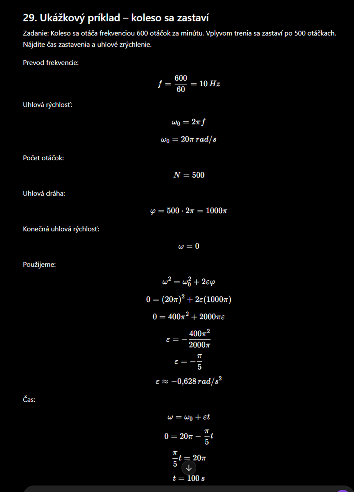
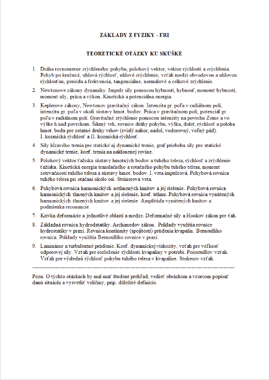
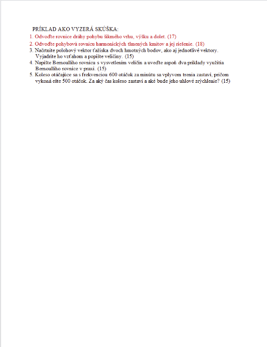
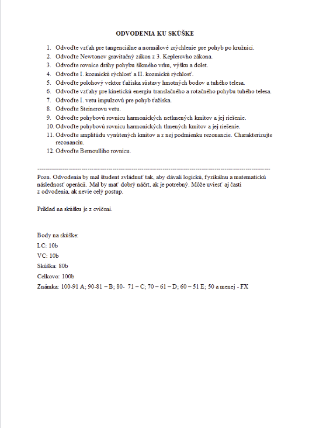

Mechanika hmotného bodu
Hmotný bod, poloha, dráha, rýchlosť, zrýchlenie, rovnomerný a rovnomerne zrýchlený pohyb.
Poznámky na skúšku z fyziky: vektory, kinematika, dynamika, práca a energia, hybnosť, rotačný pohyb, moment zotrvačnosti, Steinerova veta, matematické a fyzikálne kyvadlo a laboratórne merania.
Teóriu a vzorce označ ako naučené, laboratóriá a príklady ako urobené.
Prehľad
Hmotný bod, poloha, dráha, rýchlosť, zrýchlenie, rovnomerný a rovnomerne zrýchlený pohyb.
Newtonove zákony, sila, tiaž, trenie, výslednica síl, pohybová rovnica a jednoduché úlohy.
Moment sily, moment zotrvačnosti, Steinerova veta, matematické a fyzikálne kyvadlo.
Okruhy na skúšku
Táto časť je prepísaná podľa okruhov ku skúške. Pri učení nestačí vedieť iba vzorce, treba vedieť vysvetliť význam veličín, nakresliť obrázok a stručne popísať fyzikálnu situáciu.
v = ds/dt
a = dv/dt
ω = Δφ/Δt
v = ωr
at = εr
an = v²/r = ω²r
f = 1/T
ω = 2πfF = ma
p = mv
I = FΔt = Δp
M = rF sin α
W = Fs cos α
P = W/t
Ek = 1/2 mv²
Ep = mghF = G m1m2/r²
g = GM/r²
vx = v0 cos α
vy = v0 sin α - gt
H = v0² sin²α / 2g
D = v0² sin 2α / gFt = f · FN
Ft,max = fs · FN
dynamické trenie: Ft = fd · FNrT = Σmiri / Σmi
Ek,trans = 1/2 mv²
Ek,rot = 1/2 Iω²
I = Σmiri²
M = Iε
I = I0 + md²x'' + ω0²x = 0
x = A sin(ωt + φ)
tlmené:
x'' + 2βx' + ω0²x = 0
vynútené:
x'' + 2βx' + ω0²x = F0/m · cos(Ωt)F = kx
σ = F/S
ε = Δl/l0
σ = Eεp = ρgh
Fvz = ρgV
S1v1 = S2v2
p + 1/2ρv² + ρgh = konšt.Stokesov zákon:
F = 6πηrv
Reynoldsovo číslo:
Re = ρvd/ηOdvodenia
Odvodenia sa netreba učiť ako čistý text naspamäť. Dôležité je vedieť logiku, fyzikálny význam a vedieť z odvodenia použiť aj časť, keď nechceš celý postup.
Odvoďte vzťah pre tangenciálne a normálové zrýchlenie pri pohybe po kružnici.
Odvoďte Newtonov gravitačný zákon z 3. Keplerovho zákona.
Odvoďte rovnice dráhy pohybu šikmého vrhu, výšku a dolet.
Odvoďte I. kozmickú rýchlosť a II. kozmickú rýchlosť.
Odvoďte polohový vektor ťažiska sústavy hmotných bodov a tuhého telesa.
Odvoďte vzťahy pre kinetickú energiu translačného a rotačného pohybu tuhého telesa.
Odvoďte I. vetu impulzovú pre pohyb ťažiska.
Odvoďte Steinerovu vetu.
Odvoďte pohybovú rovnicu harmonických netlmených kmitov a jej riešenie.
Odvoďte pohybovú rovnicu harmonických tlmených kmitov a jej riešenie.
Odvoďte amplitúdu vynútených kmitov a z nej podmienku rezonancie. Charakterizujte rezonanciu.
Odvoďte Bernoulliho rovnicu.
Vzorová písomka
Odvoďte rovnice dráhy pohybu šikmého vrhu, výšku a dolet.
Odvoďte pohybovú rovnicu harmonických tlmených kmitov a jej riešenie.
Načrtnite polohový vektor ťažiska dvoch hmotných bodov, ako aj jednotlivé vektory. Vyjadrite ho vzťahom a popíšte veličiny.
Napište Bernoulliho rovnicu s vysvetlením veličín a uveďte aspoň dva príklady využitia Bernoulliho rovnice v praxi.
Koleso otáčajúce sa frekvenciou 600 otáčok za minútu sa vplyvom trenia zastaví, pričom vykoná ešte 500 otáčok. Za aký čas sa koleso zastaví a aké bude jeho uhlové zrýchlenie?
Vzorový príklad
Koleso sa otáča frekvenciou 600 otáčok za minútu. Vplyvom trenia sa zastaví po 500 otáčkach. Nájdite čas zastavenia a uhlové zrýchlenie.
f = 600 / 60 = 10 Hzω0 = 2πf
ω0 = 2π · 10
ω0 = 20π rad/sN = 500 otáčok
φ = N · 2π
φ = 500 · 2π = 1000π radω = 0ω² = ω0² + 2εφ
0 = (20π)² + 2ε(1000π)
0 = 400π² + 2000πε
ε = -400π² / 2000π
ε = -π/5
ε ≈ -0,628 rad/s²ω = ω0 + εt
0 = 20π - (π/5)t
(π/5)t = 20π
t = 100 sUhlové zrýchlenie: ε = -π/5 ≈ -0,628 rad/s²
Čas zastavenia: t = 100 s
Znamienko mínus znamená, že ide o spomaľovanie, teda uhlové zrýchlenie pôsobí proti smeru otáčania.
Obrázky z podkladov
Sem som pridal obrázky, ktoré si poslal: vzorový príklad, okruhy teoretických otázok, vzorovú písomku a zoznam odvodení.




Rozšírená teória
Vektor má veľkosť, smer a orientáciu. Vektorové veličiny sú napríklad sila, rýchlosť, zrýchlenie a hybnosť.
skalárny súčin:
a · b = |a||b|cos α
vektorový súčin:
|a × b| = |a||b|sin αHmotný bod je zjednodušený model telesa. Sledujeme polohu, dráhu, rýchlosť a zrýchlenie.
v = s/t
a = Δv/Δt
v = v0 + at
s = s0 + v0t + 1/2 at²Dynamika skúma príčiny pohybu. Keď na teleso pôsobí výsledná sila, teleso sa zrýchľuje.
F = ma
FG = mg
Ft = fFNPráca vzniká pôsobením sily po dráhe. Energia vyjadruje schopnosť konať prácu.
W = Fs cos α
Ek = 1/2 mv²
Ep = mgh
P = W/tMoment zotrvačnosti vyjadruje odpor telesa proti zmene rotačného pohybu.
I = mr²
M = rF sin α
M = IεPoužije sa pri výpočte momentu zotrvačnosti vzhľadom na os rovnobežnú s osou cez ťažisko.
I = I0 + md²
I0 = moment cez ťažisko
m = hmotnosť
d = vzdialenosť osíMatematické kyvadlo je ideálny model. Fyzikálne kyvadlo je skutočné tuhé teleso.
matematické:
T = 2π√(l/g)
fyzikálne:
T = 2π√(I/(mgl))Pri fyzike býva veľa chýb z nesprávnych jednotiek.
1 cm = 0,01 m
1 mm = 0,001 m
1 g = 0,001 kg
1 N = 1 kg·m/s²
1 J = 1 N·mVzorové labáky
Meria sa priemer d a výška h. Objem sa vypočíta zo vzorca pre valec.
V = πd²h / 4
postup:
1. odmeraj d viackrát
2. odmeraj h viackrát
3. vypočítaj priemery
4. dosaď do vzorca
5. zapíš výsledok s jednotkou a neistotouMeria sa perióda kmitania a z nej sa dá overiť tiažové zrýchlenie alebo vzorec pre periódu.
T = t / n
g = 4π²l / T²
n = počet kmitov
t = celkový čas
l = dĺžka kyvadlaVýsledok sa nepíše len ako číslo, ale aj s chybou merania.
x = (x̄ ± Δx) jednotka
príklad:
V = (5619 ± 4) mm³Teória
Vektor má veľkosť, smer a orientáciu. Vo fyzike vektorom opisujeme napríklad polohu, rýchlosť, zrýchlenie, silu, hybnosť a moment sily.
Súčet vektorov:
a + b
Skalárny súčin:
a · b = |a||b|cos(α)
Vektorový súčin:
|a × b| = |a||b|sin(α)Hmotný bod je zjednodušený model telesa, pri ktorom zanedbáme rozmery telesa. Sledujeme len jeho polohu a pohyb. Pri pohybe riešime dráhu, rýchlosť a zrýchlenie.
Priemerná rýchlosť:
v = s / t
Rovnomerný pohyb:
s = v · t
Rovnomerne zrýchlený pohyb:
v = v0 + a · t
s = s0 + v0t + (1/2)at²Dynamika skúma príčiny pohybu. Základom sú Newtonove pohybové zákony. Ak poznáme výslednú silu pôsobiacu na teleso, vieme určiť zrýchlenie.
2. Newtonov zákon:
F = m · a
Tiažová sila:
FG = m · g
Trecia sila:
Ft = f · FNMechanická práca vzniká, keď sila pôsobí na teleso po určitej dráhe. Energia vyjadruje schopnosť konať prácu. Výkon hovorí, ako rýchlo sa práca vykoná.
Práca:
W = F · s · cos(α)
Kinetická energia:
Ek = (1/2)mv²
Potenciálna energia:
Ep = mgh
Výkon:
P = W / tHybnosť opisuje pohybový stav telesa. Pri izolovanej sústave platí zákon zachovania hybnosti.
Hybnosť:
p = m · v
Impulz sily:
I = F · Δt
Zmena hybnosti:
I = ΔpPri rotačnom pohybe namiesto sily často používame moment sily. Moment zotrvačnosti vyjadruje, ako veľmi sa teleso bráni zmene rotačného pohybu.
Moment sily:
M = r · F · sin(α)
Moment zotrvačnosti hmotného bodu:
I = m · r²
Rotačná pohybová rovnica:
M = I · εSteinerova veta umožňuje vypočítať moment zotrvačnosti vzhľadom na os, ktorá je rovnobežná s osou prechádzajúcou ťažiskom.
Steinerova veta:
I = I0 + m · d²
I0 = moment zotrvačnosti vzhľadom na os cez ťažisko
m = hmotnosť telesa
d = vzdialenosť osíMatematické kyvadlo je model hmotného bodu zaveseného na nehmotnom vlákne. Fyzikálne kyvadlo je skutočné tuhé teleso, ktoré kmitá okolo osi.
Matematické kyvadlo:
T = 2π√(l/g)
Fyzikálne kyvadlo:
T = 2π√(I/(mgl))Vzorce
v = s/t
a = Δv/Δt
s = v0t + 1/2 at²
v² = v0² + 2asF = ma
FG = mg
Ft = fFN
FN = mg pri vodorovnej rovineW = Fs cosα
Ek = 1/2 mv²
Ep = mgh
P = W/tp = mv
I = FΔt
I = Δpω = φ/t
v = ωr
M = rF sinα
I = mr²
M = IεT = 2π√(l/g)
T = 2π√(I/(mgl))
I = I0 + md²Vzorce detailne
Veličiny: m hmotnosť, v rýchlosť
Jednotky: kg, m/s, J
Kedy použiť: keď teleso má rýchlosť.
Veličiny: m hmotnosť, g tiažové zrýchlenie, h výška
Jednotky: kg, m/s², m, J
Kedy použiť: energia v gravitačnom poli.
Veličiny: I0 moment cez ťažisko, d vzdialenosť osí
Jednotky: kg·m²
Kedy použiť: os je rovnobežná s osou cez ťažisko.
Veličiny: l dĺžka, g tiažové zrýchlenie
Jednotky: m, m/s², s
Kedy použiť: malé výchylky a hmotný bod na vlákne.
Otázky na skúšku
Model telesa, pri ktorom zanedbáme rozmery a sledujeme iba jeho pohyb.
Keď potrebujeme moment zotrvačnosti vzhľadom na os rovnobežnú s osou cez ťažisko.
Matematické kyvadlo je idealizovaný hmotný bod na vlákne, fyzikálne je skutočné tuhé teleso.
Zabudnutý prevod jednotiek, napríklad cm na m alebo mm na m.
Príklady
Ak poznáš hmotnosť a výslednú silu, použiješ 2. Newtonov zákon.
Zadané: m, F
Vzorec: F = ma
Úprava: a = F/mPri pohybujúcom sa telese vypočítaš energiu zo vzorca Ek = 1/2mv².
1. Preveď jednotky na kg a m/s.
2. Dosadíš do Ek = 1/2mv².
3. Výsledok je v jouloch.Ak sa os otáčania neposúva cez ťažisko, použiješ pripočítanie md².
1. Nájdeš I0 pre os cez ťažisko.
2. Určíš vzdialenosť osí d.
3. Použiješ I = I0 + md².Pre matematické kyvadlo pri malých výchylkách závisí perióda od dĺžky a tiažového zrýchlenia.
T = 2π√(l/g)Laboratórium
Pri laboratórnom meraní sa opakovane meria výška a priemer valca. Používa sa posuvné meradlo a mikrometer. Potom sa vypočíta priemer hodnôt, objem a neistota merania.
Objem valca:
V = πr²h
alebo:
V = πd²h / 4
Typické meradlá:
mikrometer 0,01 mm
posuvné meradlo 0,05 mmPri spracovaní meraní sa používa aritmetický priemer, odchýlky, absolútna chyba a výsledok sa zapisuje v tvare hodnota ± chyba.
Priemer:
x̄ = (x1 + x2 + ... + xn)/n
Výsledok:
V = (hodnota ± chyba) jednotkaMateriály
Teória, vzorce, odvodenia a príklady na skúšku.
Stiahnuť →Kinematika, dynamika, energia, rotácia, Steinerova veta a kyvadlá.
Otvoriť →Objem valca, meradlá, priemer hodnôt a zápis výsledku.
Otvoriť →Súbory
Checklist pred skúškou
Tento checklist sa ukladá v tvojom prehliadači. Použi ho ako poslednú kontrolu pred testom, skúškou alebo odovzdaním projektu.